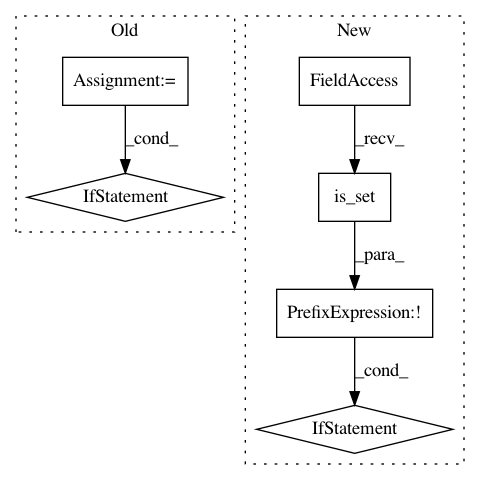

533025215d6629a1f506838fc9eeed33f2417591,lib/gui/wrapper.py,FaceswapControl,terminate,#FaceswapControl#,335
Before Change
timeout = get_config().tk_vars["traintimeout"].get()
logger.debug("Sending Exit Signal")
print("Sending Exit Signal", flush=True)
now = time()
if os.name == "nt":
logger.debug("Sending carriage return to process")
con_in = win32console.GetStdHandle( // pylint:disable=c-extension-no-member
win32console.STD_INPUT_HANDLE) // pylint:disable=c-extension-no-member
keypress = self.generate_windows_keypress("\n")
con_in.WriteConsoleInput([keypress])
else:
logger.debug("Sending SIGINT to process")
self.process.send_signal(signal.SIGINT)
while True:
timeelapsed = time() - now
if self.process.poll() is not None:
break
if timeelapsed > timeout:
logger.error("Timeout reached sending Exit Signal")
self.terminate_all_children()
else:
self.terminate_all_children()
@staticmethod
After Change
args=(self.command, self.process))
self.thread.start()
root.after(1000, self.terminate)
elif not self.thread.complete.is_set():
logger.debug("Not finished terminating")
root.after(1000, self.terminate)
else:
In pattern: SUPERPATTERN
Frequency: 3
Non-data size: 6
Instances
Project Name: deepfakes/faceswap
Commit Name: 533025215d6629a1f506838fc9eeed33f2417591
Time: 2019-06-28
Author: 36920800+torzdf@users.noreply.github.com
File Name: lib/gui/wrapper.py
Class Name: FaceswapControl
Method Name: terminate
Project Name: ray-project/ray
Commit Name: 7e63090ca989a4771c90d1b9afa201e30d4702a1
Time: 2021-03-20
Author: simon.mo@hey.com
File Name: python/ray/serve/router.py
Class Name: Router
Method Name: assign_request
Project Name: pantsbuild/pants
Commit Name: 9979b78f759ef7f210f5c6319b194db121157197
Time: 2020-05-06
Author: stuhood@twitter.com
File Name: src/python/pants/pantsd/service/fs_event_service.py
Class Name: FSEventService
Method Name: run